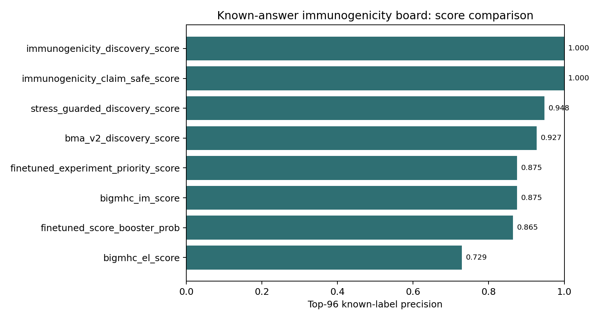
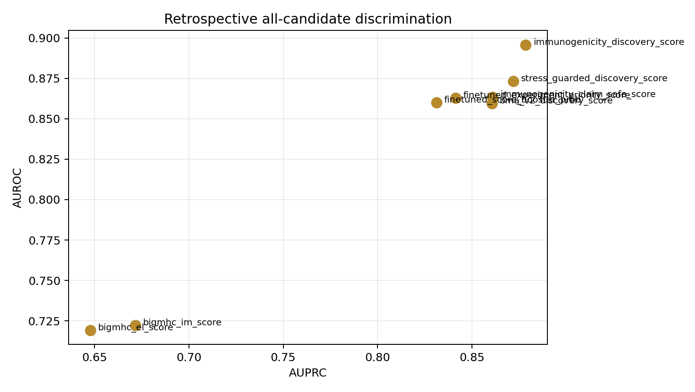

01Summary
BigMHC IM alone is useful but not sufficient: it recovers 84/96 known positives at top96. Existing CROSS-Neo stress-guarded ranking recovers 91/96. The fixed integrated immunogenicity score recovers 96/96 in this retrospective board.
Boundary: high top-k recovery here is known-answer and overlap-heavy. Use it to design the 96-well immunogenicity test, not to claim prospective discovery.


02Strategy Matrix
| algorithm_family | paper_basis | local_status | cross_neo_role | claim_boundary | priority |
|---|---|---|---|---|---|
| BigMHC IM | presentation model transfer-learned on immune response data | run_actual_local_weights | external immunogenicity comparator and discovery feature | public model; audit overlap before clean benchmark claims | P0 |
| BigMHC EL / NetMHCpan-like presentation | MHC-I eluted-ligand/presentation likelihood | BigMHC EL run actual; NetMHCpan cited as conceptual standard | presentation gate; cannot prove TCR activation alone | presentation support only | P0 |
| pMTnet + TEPCAM | TCR-pMHC or TCR-peptide recognition expert scores | actual local pilot already available for TCR-supported rows | TCR recognition lane and disagreement queue | diagnostic expert score until paired wetlab or clean TCR benchmark | P0 |
| Neoantigen fitness model | presentation amplitude plus TCR-recognition probability | implemented as fixed proxy: BigMHC presentation + mutant/WT foreignness | interpretable bridge between presentation and recognition | proxy unless mutant/WT quantitative presentation is available | P1 |
| DeepImmuno / PRIME-like peptide-HLA immunogenicity | peptide-HLA immunogenicity independent of binding-only prediction | not run; included in strategy and public-overlap audit lane | future external comparator after training-corpus audit | do not import public scores as clean features without overlap audit | P1 |
| ImmunoStruct / structure-aware multimodal | sequence, structure, biochemical class-I pMHC immunogenicity | not run; strategy-only due novelty/checkpoint access | future P0 if code/checkpoints are usable; currently approximated by MD lane | no headline until reproduced locally and overlap audited | P2 |
03Algorithm Benchmark
| score_column | AUROC | AUPRC | top10_precision | top24_precision | top48_precision | top96_precision | top96_hits |
|---|---|---|---|---|---|---|---|
| immunogenicity_discovery_score | 0.896 | 0.878 | 1.000 | 1.000 | 1.000 | 1.000 | 96 |
| immunogenicity_claim_safe_score | 0.864 | 0.861 | 1.000 | 1.000 | 1.000 | 1.000 | 96 |
| stress_guarded_discovery_score | 0.873 | 0.872 | 1.000 | 0.917 | 0.958 | 0.948 | 91 |
| bma_v2_discovery_score | 0.860 | 0.861 | 1.000 | 0.917 | 0.938 | 0.927 | 89 |
| finetuned_experiment_priority_score | 0.863 | 0.841 | 1.000 | 0.917 | 0.917 | 0.875 | 84 |
| bigmhc_im_score | 0.722 | 0.672 | 0.900 | 0.792 | 0.812 | 0.875 | 84 |
| finetuned_score_booster_prob | 0.860 | 0.831 | 0.900 | 0.833 | 0.875 | 0.865 | 83 |
| bigmhc_el_score | 0.719 | 0.648 | 0.700 | 0.667 | 0.688 | 0.729 | 70 |
| impact_portfolio_score | 0.887 | 0.842 | 0.500 | 0.625 | 0.542 | 0.698 | 67 |
| v4_claim_unlock_score | 0.864 | 0.816 | 0.500 | 0.708 | 0.354 | 0.604 | 58 |
| fitness_foreignness_proxy | 0.500 | 0.434 | 0.500 | 0.708 | 0.354 | 0.604 | 58 |
| tcr_recognition_score_norm | 0.506 | 0.440 | 1.000 | 0.583 | 0.354 | 0.177 | 17 |
04Slice Stress
BigMHC helps most where the previous stress-guarded score was weak, especially TESLA-style low-prevalence slices. That makes it a useful external comparator even when the integrated score remains claim-capped.
| slice | score_column | AUROC | AUPRC | top24_precision | top96_precision |
|---|---|---|---|---|---|
| leakage=high | bigmhc_im_score | 0.696 | 0.711 | 0.917 | 0.927 |
| leakage=high | immunogenicity_discovery_score | 0.892 | 0.900 | 1.000 | 1.000 |
| leakage=high | stress_guarded_discovery_score | 0.872 | 0.883 | 0.917 | 0.948 |
| leakage=low | bigmhc_im_score | 0.893 | 0.384 | 0.417 | 0.292 |
| leakage=low | immunogenicity_discovery_score | 0.917 | 0.564 | 0.583 | 0.271 |
| leakage=low | stress_guarded_discovery_score | 0.909 | 0.588 | 0.625 | 0.281 |
| leakage=medium | bigmhc_im_score | 0.722 | 0.417 | 0.217 | 0.217 |
| leakage=medium | immunogenicity_discovery_score | 0.833 | 0.727 | 0.217 | 0.217 |
| leakage=medium | stress_guarded_discovery_score | 0.933 | 0.760 | 0.217 | 0.217 |
| source=CEDAR | bigmhc_im_score | 0.539 | 0.955 | 1.000 | 0.990 |
| source=CEDAR | immunogenicity_discovery_score | 0.709 | 0.975 | 1.000 | 1.000 |
| source=CEDAR | stress_guarded_discovery_score | 0.503 | 0.936 | 0.917 | 0.948 |
| source=ITSNdb_Val | bigmhc_im_score | 0.673 | 0.202 | 0.167 | 0.062 |
| source=ITSNdb_Val | immunogenicity_discovery_score | 0.947 | 0.705 | 0.250 | 0.073 |
| source=ITSNdb_Val | stress_guarded_discovery_score | 1.000 | 1.000 | 0.292 | 0.073 |
| source=ITSNdb_main | bigmhc_im_score | 0.587 | 0.688 | 0.625 | 0.750 |
| source=ITSNdb_main | immunogenicity_discovery_score | 0.433 | 0.645 | 0.625 | 0.594 |
| source=ITSNdb_main | stress_guarded_discovery_score | 0.343 | 0.697 | 0.833 | 0.531 |
| source=NEPdb | bigmhc_im_score | 0.889 | 0.770 | 0.958 | 0.802 |
| source=NEPdb | immunogenicity_discovery_score | 0.882 | 0.760 | 0.917 | 0.833 |
| source=NEPdb | stress_guarded_discovery_score | 0.790 | 0.687 | 0.917 | 0.792 |
| source=TESLA_mmc4 | bigmhc_im_score | 0.864 | 0.291 | 0.333 | 0.219 |
| source=TESLA_mmc4 | immunogenicity_discovery_score | 0.870 | 0.329 | 0.417 | 0.260 |
| source=TESLA_mmc4 | stress_guarded_discovery_score | 0.484 | 0.055 | 0.000 | 0.010 |
| source=TESLA_mmc7_validation | bigmhc_im_score | 0.992 | 0.570 | 0.167 | 0.042 |
| source=TESLA_mmc7_validation | immunogenicity_discovery_score | 0.999 | 0.950 | 0.167 | 0.042 |
| source=TESLA_mmc7_validation | stress_guarded_discovery_score | 0.538 | 0.018 | 0.000 | 0.021 |
05Top Integrated Candidates
| candidate_id | peptide | hla_allele_4digit | label | source_name | leakage_risk_level | bigmhc_im_score | bigmhc_el_score | immunogenicity_discovery_score | immunogenicity_action | immunogenicity_claim_blockers |
|---|---|---|---|---|---|---|---|---|---|---|
| CNV0_00340 | REDDPVRML | HLA-B*40:01 | 1 | CEDAR | high | 0.925 | 0.982 | 0.695 | wetlab_priority_with_claim_boundary | high_leakage;patient_context_cap |
| CNV0_00498 | NATTIANHW | HLA-B*53:01 | 1 | CEDAR | high | 0.899 | 0.993 | 0.695 | wetlab_priority_with_claim_boundary | high_leakage;patient_context_cap |
| CNV0_02448 | ILDKVLVHL | HLA-A*02:01 | 1 | ITSNdb_main | low | 0.577 | 0.980 | 0.679 | wetlab_priority_with_claim_boundary | patient_context_cap |
| CNV0_00824 | ALMATQTFY | HLA-A*29:02 | 1 | CEDAR | high | 0.975 | 0.857 | 0.679 | wetlab_priority_with_claim_boundary | high_leakage;patient_context_cap |
| CNV0_00310 | KEYQETIGQIEL | HLA-B*40:01 | 1 | CEDAR | high | 0.856 | 0.977 | 0.673 | wetlab_priority_with_claim_boundary | high_leakage;patient_context_cap |
| CNV0_00779 | RTLMENQHW | HLA-B*58:01 | 1 | CEDAR | high | 0.813 | 0.992 | 0.665 | wetlab_priority_with_claim_boundary | high_leakage;patient_context_cap |
| CNV0_02473 | KEFEDDIINW | HLA-B*44:03 | 1 | ITSNdb_main | high | 0.749 | 0.986 | 0.665 | wetlab_priority_with_claim_boundary | high_leakage;public_tool_overlap;patient_context_cap |
| CNV0_00441 | KEDEIQDISL | HLA-B*40:01 | 1 | CEDAR | high | 0.880 | 0.941 | 0.663 | wetlab_priority_with_claim_boundary | high_leakage;patient_context_cap |
| CNV0_00442 | MHAQSAEL | HLA-B*15:10 | 1 | CEDAR | high | 0.891 | 0.964 | 0.660 | wetlab_priority_with_claim_boundary | high_leakage;patient_context_cap |
| CNV0_00545 | REVIQNSKEVL | HLA-B*40:01 | 1 | CEDAR | high | 0.844 | 0.982 | 0.659 | wetlab_priority_with_claim_boundary | high_leakage;patient_context_cap |
| CNV0_00858 | MIAEPAHFY | HLA-A*30:02 | 1 | CEDAR | high | 0.951 | 0.845 | 0.659 | wetlab_priority_with_claim_boundary | high_leakage;patient_context_cap |
| CNV0_00821 | NADPASHEIW | HLA-B*53:01 | 1 | CEDAR | high | 0.783 | 0.983 | 0.659 | wetlab_priority_with_claim_boundary | high_leakage;patient_context_cap |
| CNV0_00399 | TVLSLSCLY | HLA-A*29:02 | 1 | CEDAR | high | 0.964 | 0.850 | 0.655 | wetlab_priority_with_claim_boundary | high_leakage;patient_context_cap |
| CNV0_00722 | KEDSAVFYEL | HLA-B*40:01 | 1 | CEDAR | high | 0.828 | 0.907 | 0.654 | wetlab_priority_with_claim_boundary | high_leakage;patient_context_cap |
| CNV0_00758 | KETEVFYEL | HLA-B*40:01 | 1 | CEDAR | high | 0.846 | 0.982 | 0.654 | wetlab_priority_with_claim_boundary | high_leakage;patient_context_cap |
| CNV0_00561 | HHGDAFHLL | HLA-B*39:01 | 1 | CEDAR | high | 0.819 | 0.995 | 0.653 | wetlab_priority_with_claim_boundary | high_leakage;patient_context_cap |
| CNV0_00642 | APRPGPRQL | HLA-B*07:02 | 1 | CEDAR | high | 0.870 | 0.993 | 0.652 | wetlab_priority_with_claim_boundary | high_leakage;patient_context_cap |
| CNV0_00897 | FPGPIFHL | HLA-B*35:01 | 1 | CEDAR | high | 0.879 | 0.894 | 0.651 | wetlab_priority_with_claim_boundary | high_leakage;patient_context_cap |
| CNV0_00714 | KEIDEVGDLL | HLA-B*40:01 | 1 | CEDAR | high | 0.833 | 0.973 | 0.650 | wetlab_priority_with_claim_boundary | high_leakage;patient_context_cap |
| CNV0_00362 | NVFDEAILAA | HLA-A*02:05 | 1 | CEDAR | high | 0.841 | 0.940 | 0.648 | watchlist_or_active_learning | high_leakage;patient_context_cap |
06Grafted Score
immunogenicity_discovery_score = 0.30 CROSS-Neo + 0.25 BigMHC IM + 0.15 BigMHC EL + 0.15 TCR expert + 0.10 mutant/WT foreignness proxy + 0.05 MD/control readiness
immunogenicity_claim_safe_score applies existing validity, patient-context and overlap caps. Current run intentionally produces no automatic claim-safe promotion.
07Sources + Paths
Results: project/results/cross_neo_immunogenicity_algorithm_compare_2026_05_10
Script: scripts/build_cross_neo_immunogenicity_algorithm_compare.py
External local model: /data/thca/_tmp/relocated_2026_05_09/bigmhc
Primary literature used for strategy: BigMHC, NetMHCpan-4.1, pMTnet, PanPep, DeepImmuno, neoantigen fitness model, ImmunoStruct.